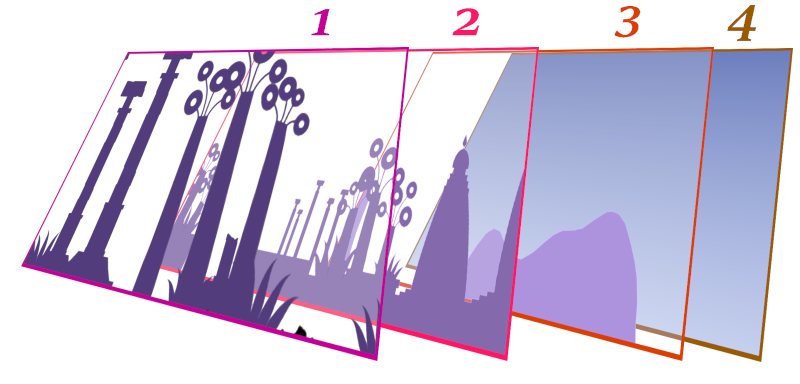

How To: Setup Stages
The "stage" means a background environment of the scene.
Understanding the Stage Layers
There are some layers of stages background.
(In here, "uncontrollable" means cannot change index or camera sensitivity)

- Topmost Layer is rendered on top of the stage background, e.g. grass, stone.
- Middle Object Layer is rendered back of the topmost layer. This might contain structure in index 1.
- Back Object Layer is far-away looking objects in the stage, but still stays front of the sky layer.
- Background Layer is uncontrollable layer that decides the sky colour, and some white smooth cloud.
- Not in the image, but some maps might have some uncontrollable objects (especially in dungeon).
Note that some stages might have more complicated background, especially in dungeon (e.g. pillars).
First, Decide what stages will appear, and when they will appear
If the field has more than one stage:
- If the stage will change after certain distance, declaring the start is unnecessary.
- If the stage will change in certain condition (e.g. Pondora), multiple stagae must be defined, thus it needs startSetupStage.
If the field has only one stage, startSetupStage is not necessary.
For stage IDs, check the reference.
Second, Read the resources
Call readArcFile to load the stage resources.
0000008C 25100600:getPack(4:0)
00000098 25120200:setMissionTimmingScript(2:0, 4:0, 1:F0) //phase 0
...
000000F8 25090900:readArcFile(2:2, "Actor/Stage/stg041.bnd")
0000011C 25090900:readArcFile(2:2, "Actor/Stage/stg042.bnd")
00000140 25000100:cmd_end()
Third, set the stageparam
When setting the stageparam, call the existing one.
The camera sensitivity is pre-adjusted smoothly, so it is not necessary to define a new one.
000000D0 25120200:setMissionTimmingScript(2:2, 4:0, 1:DD4) //phase 2
...
00000DE4 25000300:cmd_call(1:E80)
00000E80 25000300:cmd_call(1:69AC)
000069AC 25165E00:setStageParam(1.0, 0.800000011920929, 0.699999988079071, 2:0, "stg041")
000069D8 25000100:cmd_end()
00000E88 25000300:cmd_call(1:69DC)
000069DC 25165E00:setStageParam(1.0, 0.800000011920929, 0.6000000238418579, 2:0, "stg042")
00006A08 25000100:cmd_end()
Finally, add and apply the stage.
Simple stage change by the position
For stage change after few marching, defining multiple stage will do the job.
In multiple stages, one addStage defines stage after 5~6 march (with pons).
So for example, if the new stage should be appeared after 10~12 march, define two same stage with addStage and change the stage in the third call.
00000E90 25000300:cmd_call(1:10E4)
000010E4 25165D00:addStage(2:0, 2:0, 2:0, 2:1, 2:0, "stg041")
00001118 25165D00:addStage(2:0, 2:0, 2:0, 2:1, 2:0, "stg041")
0000114C 25165D00:addStage(2:0, 2:0, 2:0, 2:1, 2:0, "stg041")
00001180 25165D00:addStage(2:0, 2:0, 2:0, 2:0, 2:0, "stg042")
000011B4 25165D00:addStage(2:0, 2:0, 2:0, 2:0, 2:0, "stg042")
000011E8 25165D00:addStage(2:0, 2:0, 2:0, 2:0, 2:0, "stg042")
0000121C 25000100:cmd_end()
00000E98 25165C00:endSetupStage()
00000E9C 25165F00:applyStage(2:0)
Do not forget to call applyStage after the setting is done.
The applyStage parameter is zero in this case, because no stage group(with startSetupStage) is defined.
Stage change under certain condition
For calling manual scene change, multiple stage groups are required.
The group starts with startSetupStage, which has stage ID as parameter.
00000CC0 25165B00:startSetupStage(2:0)
00000CCC 25165D00:addStage(2:0, 2:0, 2:0, 2:0, 2:0, "stg074")
00000D00 25165C00:endSetupStage() //For closing *startSetupStage*
00000D04 25165B00:startSetupStage(2:1)
00000D10 25165D00:addStage(2:0, 2:0, 2:0, 2:0, 2:0, "stg076")
00000D44 25165C00:endSetupStage() //For closing *startSetupStage*
00000D48 25165B00:startSetupStage(2:2)
00000D54 25165D00:addStage(2:0, 2:0, 2:0, 2:0, 2:0, "stg077")
00000D88 25165C00:endSetupStage() //For closing *startSetupStage*
00000D8C 25165C00:endSetupStage() //! DONE DEFINING ALL STAGES !
00000D90 25165F00:applyStage(2:0) // call the stage
Note that one endSetupStage in the end is not paired.
Unlike other endSetupStage closing startSetupStage, the last one means done defining the whole stage setup in the mission.
Changing the stage
Give the stage group ID (defined with startSetupStage) to the applyStage.
0002EDEC 25165F00:applyStage(2:1)
0002EDF8 25000100:cmd_end()
0002EDFC 25165F00:applyStage(2:2)
0002EE08 25000100:cmd_end()